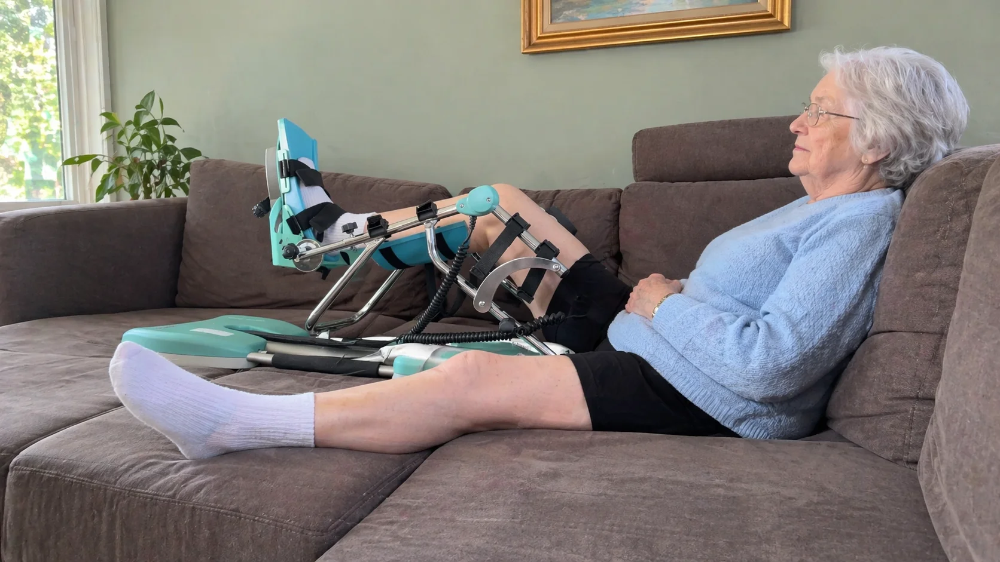

Na een knieprothese of andere knieoperatie horen de meeste patiënten veel over het buigen van de knie — hoeveel graden flexie ze moeten bereiken. Maar er is een even belangrijk en vaak onderschat probleem: het volledig strekken van de knie. Een extensiedeficit — de onmogelijkheid om de knie volledig recht te leggen — kan leiden tot een blijvend hinken, overbelasting van andere gewrichten en zelfs een mislukt herstel. In dit artikel legt PhysioVisit uit wat een extensiedeficit precies is, waarom het zo ernstig is, en hoe de Kinetec CPM machine u kan helpen dit te voorkomen of te corrigeren.
Opgepast
Een extensiedeficit van meer dan 10 graden dat na de eerste maand na operatie blijft bestaan, moet onmiddellijk behandeld worden door een kinesitherapeut. Hoe langer u wacht, hoe moeilijker het te corrigeren is. Neem contact op met PhysioVisit voor begeleiding aan huis.
Wat is een Extensiedeficit na een Knieoperatie?
Extensie betekent het strekken van de knie tot 0 graden — de volledig rechte positie. Een extensiedeficit (ook wel "extension lag" of "strekdeficit" genoemd) treedt op wanneer u de knie niet volledig kunt strekken:
- 0–5 graden: minimaal deficit, vrijwel altijd aanwezig kort na operatie, normaliseert spontaan
- 5–10 graden: licht deficit, vraagt actieve aandacht en oefentherapie
- 10–15 graden: matig deficit, vereist gerichte behandeling door kinesitherapeut
- >15 graden: ernstig deficit, kan leiden tot looppatroonproblemen en moet intensief behandeld worden
Na een knieprothese of kruisbandoperatie is een tijdelijk extensiedeficit normaal. Het gewrichtskapsel, de spieren en het littekenweefsel zijn gespannen door de operatie. Maar als dit niet actief gecorrigeerd wordt in de eerste weken, kan het gewrichtskapsel inkrimpen in die beperkte positie — wat een blijvende contractuur veroorzaakt.
Waarom is een Extensiedeficit zo Gevaarlijk?
Veel patiënten focussen op het halen van 90 of 120 graden flexie en negeren de strekking. Dat is een ernstige fout. Een extensiedeficit heeft verstrekkende gevolgen:
Gevolgen op korte termijn
- Hinken en asymmetrisch looppatroon
- Overbelasting van heup en lage rug
- Verhoogde vermoeidheid bij stappen
- Verminderd evenwicht en valrisico
Gevolgen op lange termijn
- Permanente contractuur van het gewrichtskapsel
- Overbelasting van de knieprothese
- Artrose in heup en enkel door compensatie
- Mogelijke heroperatie in ernstige gevallen
Goed nieuws: een extensiedeficit dat vroegtijdig herkend en behandeld wordt, is in de meeste gevallen volledig corrigeerbaar. De sleutel is snelle actie in de eerste 4 tot 6 weken na de operatie.

Hoe Helpt de Kinetec bij Extensiedeficit?
De Kinetec CPM machine wordt doorgaans gebruikt om de flexie (het buigen) van de knie te bevorderen. Maar de machine heeft ook een waardevolle rol in het aanpakken van extensiedeficit — via twee mechanismen:
1. Passieve extensie via lage instelling
Door de Kinetec in te stellen op een minimale buigingshoek — typisch 0 tot 5 graden — wordt het been gedurende langere tijd in de maximale strekking gehouden. Dit passieve langdurige rekken is effectiever dan kortdurende handmatige stretching, omdat het gewrichtskapsel en de bindweefsels tijd nodig hebben om te verlengen. Sessies van 30 tot 60 minuten in extensiestand zijn standaard in de revalidatie.
2. Cyclische beweging door het volledige bereik
Wanneer de Kinetec cycli maakt van 0 graden extensie tot 90 graden flexie en terug, ervaart het gewricht herhaalde extensie-impulsen die het kapsel geleidelijk oprekken. Dit is minder intens dan statisch rekken maar bevordert de doorbloeding en vermindert zwelling — wat indirect ook de extensie verbetert. Zie ook ons artikel over het kinetec gebruiksschema per dag.
Kinetec op 0°
Extensie-oefeningen
Looptraining start
Normaal lopen
Praktische tip
Stel de Kinetec elke ochtend gedurende 30 minuten in op 0 graden extensie, voor de eerste flexiesessie. Het been is 's morgens het stijfst, maar ook het meest responsief voor rekken. Wissel daarna af met flexiesessies tot 90 graden of meer. Bespreek het exacte schema met uw kinesitherapeut.
Hoe de Kinetec Instellen voor Extensie
| Instelling | Extensiefocus (strekken) | Flexiefocus (buigen) |
|---|---|---|
| Minimale hoek | 0 graden (zo recht mogelijk) | 0–30 graden |
| Maximale hoek | 0–15 graden (statisch houden) | Gradueel ophogen (dag per dag) |
| Snelheid | Laag (langzame cycli of statisch) | Normaal tot hoog |
| Duur per sessie | 30–60 minuten | 30–45 minuten |
| Aantal sessies/dag | 1–2 × (ochtend prioriteit) | 2–3 × |
| Knie positie | Hiel op voetsteun, knie zo recht mogelijk | Standaard positie |
Aanvullende Oefeningen bij Extensiedeficit
De Kinetec werkt het best in combinatie met actieve oefentherapie. Uw kinesitherapeut aan huis zal de volgende oefeningen aanraden om de extensie te verbeteren:
1. Hiel-elevatie extensiestretching
Leg uw hiel op een rol of kussen zodat de knie vrij hangt. De zwaartekracht trekt het been geleidelijk recht. Houd 10 tot 15 minuten aan. Leg nooit een kussen onder de knie — dit bevordert juist het flexiepatroon.
2. Isometrische quadriceps contracties
Span de quadricepsspier (bovenbeen) zo strak mogelijk aan terwijl het been recht ligt. Houd 5 seconden vast, ontspan, herhaal 20 keer. Dit versterkt de spier die actief voor extensie zorgt.
3. Actieve knie-extensie in ruglig
Leg een rol onder uw knie (licht gebogen). Strek het onderbeen actief omhoog tot volledige extensie. Houd 2 seconden vast en laat langzaam zakken. Doe 3 sets van 15 herhalingen.
4. Extensiestretching met gewicht
Leg een zacht gewicht (1–2 kg) op het bovenbeen terwijl u met gestrekt been op uw rug ligt. Dit versterkt de passieve rek van het gewrichtskapsel. Spreek altijd met uw kinesitherapeut over de juiste gewichten voor uw situatie.
5. Looptraining met aandacht voor strekking
Bij het stappen bewust elke stap volledig strekken voor het afzetten. Uw kinesitherapeut kan dit controleren en corrigeren bij gangrevalidatie aan huis.
Wanneer Kinetec Starten bij Extensiedeficit?
Start met extensiefocus op de Kinetec zo vroeg mogelijk — idealiter in de eerste week na operatie. De meeste chirurgen schrijven Kinetec voor vanaf dag 1 of 2 na ontslag. Als uw chirurg u al een Kinetec heeft voorgeschreven, vertel dan aan uw kinesitherapeut dat u moeite heeft met strekken: zij passen de instelling aan om extensie te prioriteren.
Heeft u nog geen Kinetec? Bij PhysioVisit kunt u een Kinetec huren aan €17 per dag, inclusief levering en installatie in heel België. Meer over de ideale huurperiode leest u in ons apart artikel.
Veelgestelde Vragen over Extensiedeficit en Kinetec
Kinetec Huren bij PhysioVisit?
Wij leveren en installeren uw Kinetec aan huis in heel België. Onze kinesitherapeuten stellen het toestel correct in voor uw extensie- én flexiedoelen. Vanaf €17/dag.
Conclusie
Een extensiedeficit na een knieoperatie is een ernstige complicatie die te vermijden of te verhelpen is met de juiste aanpak. De Kinetec CPM machine speelt een sleutelrol: door dagelijkse extensiesessies van 30 tot 60 minuten in de eerste weken na de operatie wordt het gewrichtskapsel actief opgerekt en wordt contractuur voorkomen.
Combineer Kinetec-gebruik met actieve oefeningen zoals hiel-elevatie stretching, quadricepscontracties en gerichte looptraining. Schakel tijdig een kinesitherapeut aan huis in om uw extensie te bewaken en bij te sturen. Bij PhysioVisit helpen wij u met zowel de Kinetec huur als de kinesitherapeutische begeleiding in de regio Grimbergen. Neem contact op voor meer informatie.
Gerelateerde Artikelen
Kinetec Gebruiksschema: Graden per Dag
Hoeveel graden per dag verhogen en hoe lang per sessie? Compleet week-per-week schema voor optimale revalidatie.
Lees meerRevalidatie na Knieprothese: Tijdlijn & Tips
Week-per-week herstel na knieprothese. Wanneer Kinetec, hometrainer en oefeningen starten.
Lees meer